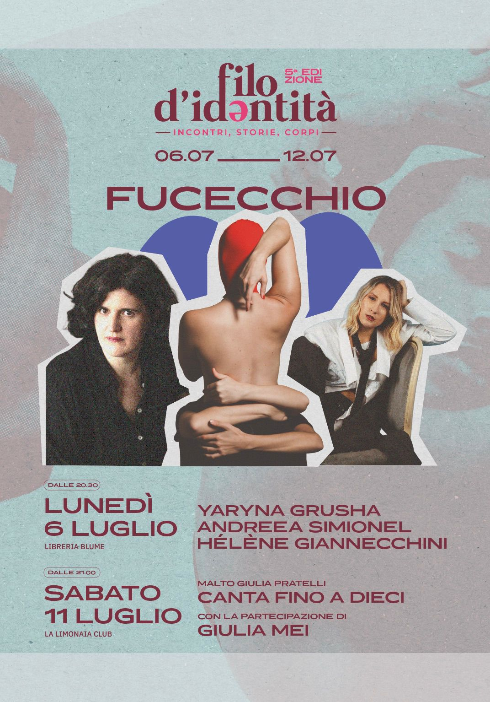
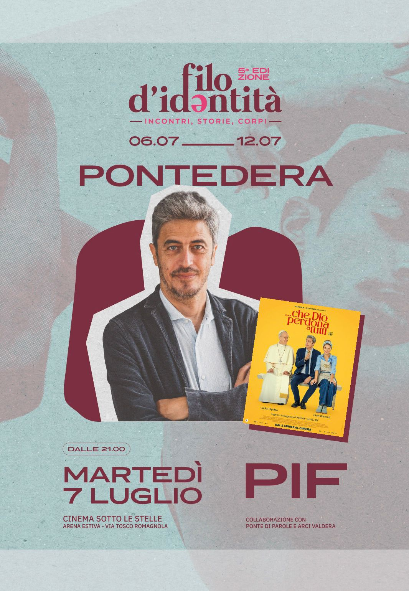
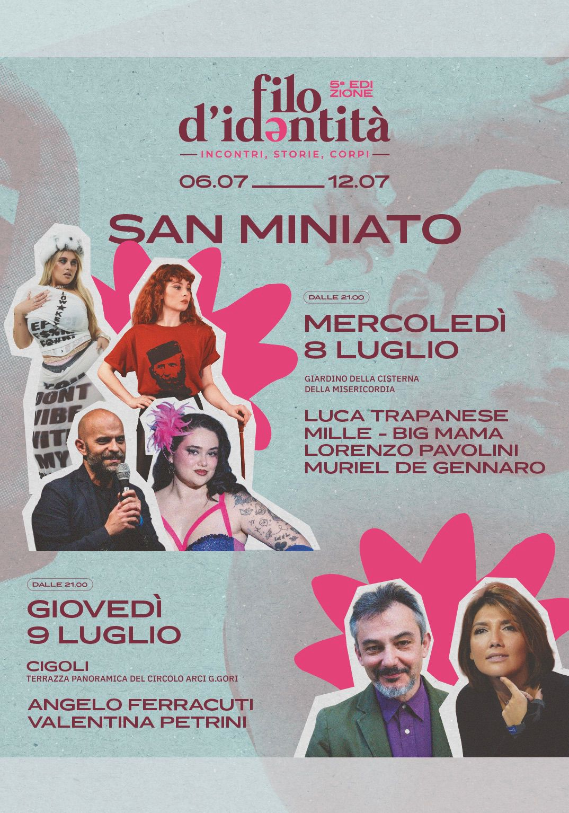
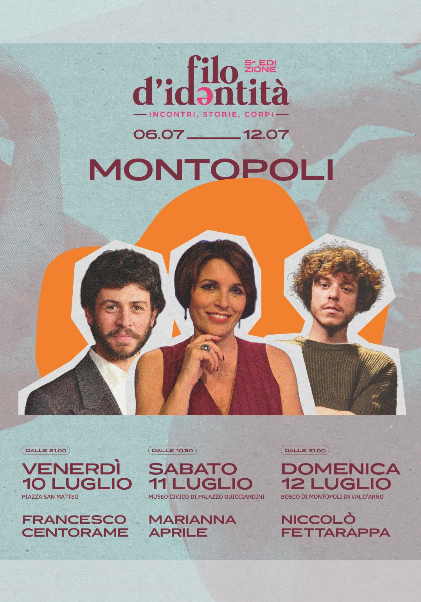

Inaugurazione del festival · 10° anniversario Libreria Blume
Aperitivo di benvenuto con buffet offerto da Unidoop Firenze.


— incontri, storie, corpi —
Identità, libertà, memoria: il filo che unisce le nostre storie.
Aperitivo di benvenuto con buffet offerto da Unidoop Firenze.
Attraverso due storie di formazione intime e contemporanee, le due autrici esplorano cosa significhi crescere ai margini, portando nel presente le eredità dell'Est europeo, della migrazione e della memoria familiare. Il corpo, la lingua e il ricordo come strumenti per interrogare le proprie radici.
In dialogo con Maria Vittoria Minisgallo (@quandostozitta). Firmacopie a cura di Libreria Blume. Ingresso libero.

«Uno smisurato desiderio di amicizia» — Iperborea
Un mosaico di storie del passato e del presente: i gesti di cura, i litigi e le gioie della famiglia elettiva dell'autrice e delle sue amiche. Scavando nella biografia e negli archivi della comunità LGBT+, Giannecchini costruisce una forza politica per fondare un nuovo modo di stare insieme.
Firmacopie a cura di Libreria Blume. Ingresso libero.
«…Che Dio perdona a tutti» — proiezione e incontro con il regista
Arturo, un agente immobiliare siciliano ateo e goloso, si innamora di Flora, una fervente cattolica. Per conquistarla, finge di essere un credente devoto, ma la bugia, tra incontri inaspettati e riflessioni morali, mette in crisi la loro relazione. Incontro con il regista dopo la proiezione.
In collaborazione con il Festival "Ponte di Parole" del Comune di Pontedera e Arci Valdera. Firmacopie a cura di Vivo!

Un incontro inedito tra l'eclettica cantautrice romana Mille e lo scrittore finalista al Premio Strega Lorenzo Pavolini. Pavolini racconta il Risorgimento attraverso la figura di Giovanni Pantaleo, frate garibaldino; Mille trasporta la stessa energia rivoluzionaria nel suo album «Risorgimento», simbolo contemporaneo di libertà e identità personale.
Firmacopie a cura di Blume e Libreria Rinascita Ubik. Ingresso libero.

Cosa significa parlare di corpi in un'epoca in cui l'immagine di sé è prevalente in ogni istante? Big Mama, l'attivista LGBTQ+ Muriel De Gennaro e la scrittrice Giulia Muscatelli riflettono su rappresentazione, desiderio, stigma e libertà, decostruendo gli standard che definiscono quali corpi possono essere visibili o ascoltati.
Firmacopie a cura di Blume e Libreria Rinascita Ubik. Ingresso libero.
Porta il tuo libro e leggi in silenzio, in compagnia. Piazzale L.Cardi, 4 — Cigoli. Ingresso libero.
«L'ultimo viaggio. Storie di vita e fine vita» — Il Saggiatore
«L'ultimo viaggio» racconta l'esperienza del dolore, della malattia e della morte attraverso le storie di chi li incontra ogni giorno negli hospice. Un libro che affronta la difficoltà di pronunciare le parole «eutanasia» o «suicidio assistito», e insieme esplora quanta vita e forza ci sia in chi accetta la propria finitezza.
Firmacopie a cura di Libreria Ubik Rinascita Empoli. Ingresso libero.
«Il prezzo della libertà» — Solferino
Se non siamo liberi di decidere se e come curarci, come vivere e come morire, quanto vale veramente la nostra libertà? Raccontando la storia dell'ultimo tempo di vita di Sibilla e Anna, Valentina Petrini illumina le disuguaglianze di una società che ci rende cittadini di serie A o di serie B di fronte alle scelte più cruciali.
Firmacopie a cura di Libreria Ubik Rinascita Empoli. Ingresso libero.
«Io quella volta lì avevo 25 anni» — di Giorgio Gaber e Sandro Luporini
L'ultimo testo in prosa scritto da Giorgio Gaber e Sandro Luporini: il protagonista, sempre idealmente venticinquenne, rievoca avvenimenti vissuti in prima persona nelle varie epoche della storia italiana. Riflessioni intelligenti, lucide e ironiche sull'uomo nella sua dimensione individuale e collettiva.
Firmacopie a cura di Libreria Roma Ubik Pontedera. Ingresso libero.

«La promessa. Dal suffragio femminile alla prima donna a palazzo Chigi» — Laterza
Ci siamo arrivate tardi e con fatica. Ma oggi che molte delle nostre conquiste sono di nuovo a rischio, che rapporto abbiamo con il voto? Marianna Aprile ripercorre una storia lunga ottant'anni, muovendosi tra le biografie straordinarie di donne troppo a lungo ignorate.
Colazione in terrazza con l'autrice. Firmacopie a cura di Libreria Rinascita Empoli. Giardino del Museo Civico di Palazzo Guicciardini (Via Francesco Guicciardini 55).
«Iconiche. Canzoniere delle cantautrici italiane di oggi.» — Arcana, 2025
Una serata dedicata al cantautorato femminile italiano, tra penne emergenti e artiste già affermate. La serata alternerà momenti di dibattito e confronto sul gender gap ad esibizioni live in chiave acustica. Solo il 8-9% dei ruoli primari nell'industria discografica è coperto da donne. A seguire DJ set.
Firmacopie a cura di Libreria Blume. Ingresso libero.
Letture agitate, nevrosi e epilessia da palco
Una serata teppista per chi ama il bel canto, ma soprattutto per chi preferisce profanarlo. Niccolò Fettarappa sale sul palco per cantare le gesta dei vandali di piazza e le sconfitte di chi vive sotto i decreti sicurezza. Un recital agitato, una radiografia comica e spietata delle nostre solitudini. Portate le fedine penali.
Firmacopie a cura di Vivo! Ingresso libero. Pontenuovo V.T. Romagnola 51.
Archivio edizioni